Scroll down for more. You can return here any time by
clicking the help button.
Your objective is to finish the shift with the
lowest possible total cost. The highest cost
component is unserved load -- so avoiding a blackout
and keeping all customers online should keep your
costs pretty low! For additional challenge,
consider prioritizing cheaper generators and not
having unnecessary generators online to bring the
average cost of power down.
Click on the "View all Alerts" button in the bottom
right to bring up the
list of alerts. This list includes hints and
notifications to help you find your
priorities for managing the grid. You can delete
any alert by clicking "OK" on the alerts window.
The most recent alert will be displayed at the
bottom of the screen.
Navigate the Texas electric grid by clicking
and dragging to move around (or use arrow keys).
Zoom in and out with the scroll wheel
(or PageUp/PageDown).
Square substations represent electric customers:
homes and businesses that use electric power. These
are also called electrical "loads". In the game
they are marked with solid squares if they are
"connected," meaning the customers have electricity,
and empty squares if they are "disconnected," if the
customers are in blackout.
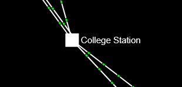
In-service load
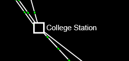
Out-of-service load
Click on one of the square load substations to bring
up more information. Each substation contains
multiple customer circuits. As the electric grid
operator, you can switch loads in or out of service.
Normally you want all loads in service. There is a
cost of $1000/MW/hr for unserved load.
Sometimes, however, loads should be opened
(disconnected) so that load-generation imbalance
does not cause further problems. Loads that have
tripped (due to frequency issues or breakup of
the grid) are not able to be closed back.
Circle substations represent electric generators, the
source of electric power. In the game the
circles are colored based on the fuel type. The
shading of the generator also represents how much
power it is producing: an empty circle is not
generating any power, while a full one is producing
at its maximum capacity.
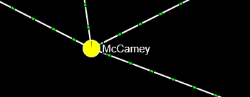
A solar plant operating near full capacity
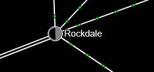
A thermal plant (coal in this case) operating at
about 50% capacity.
Click on one of the cicle generator substations to
bring up more information. Each substation contains
multiple generating units. As the electric grid
operator, you have different decisions depending
on the status of the unit.
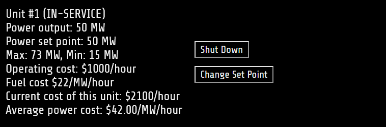
In-service generators are currently producing power.
This information shows how much power it is
producing, which will always be between the Min
and Max. (For solar and wind, the Max is adjusted
by how much solar or wind are available.).
You can change the set point of a generator, which
tells the generation controls how much power to
generate. However, the actual output may be more
or less if needed to try to balance load. Balancing
load and generation always takes top priority.
Changing the set point will generally cause the
power output to change, though some units may be
slower than others to adjust.
Cost information is also given on this screen.
Each generator has an operating cost per hour
and a fuel cost per MW, per hour. So the total cost
is (operating cost) + (power output) * (fuel cost).
Then divide that by the power output to get the
average power cost.
If desired, an in-service unit can be shut down.
This will cause the power output to reduce to zero
and, once the generator is fully shut down, there
will no longer be an operating or fuel cost.
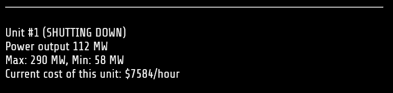
Once a generator has started shutting down, no
controls are available. You must wait until it fully
shuts down before starting it back up.
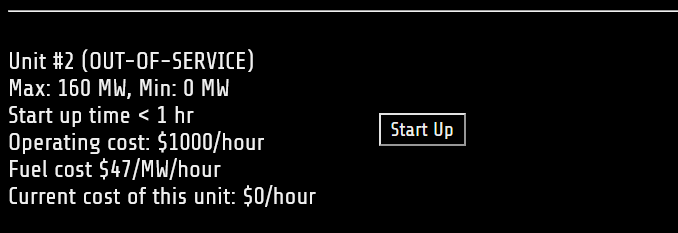
Out of service generators do not add any cost to
the system operation. They can be started up if
more generation capability is needed. Once start-up
begins, the operating cost comes into effect.
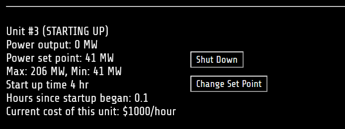
Once a generator has begun starting up, it may take
some time before it begins generating power. For
steam units (coal and nuclear), the start up time
is very long and it might not be possible to start
them up
within the duration of your shift. Most other units
start relatively quickly, except the Gas Combined
Cycle, which can start in several hours. Once
started,
the unit will increase power output to its minimum
value, then begin operating as normal.
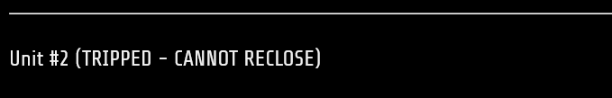
A generator that has tripped offline (due to
frequency or separation from the grid) cannot
be restarted.
Substations (circles and squares) are connected to each
other by transmission lines. The animated dots on the
line represent the direction the power is flowing.
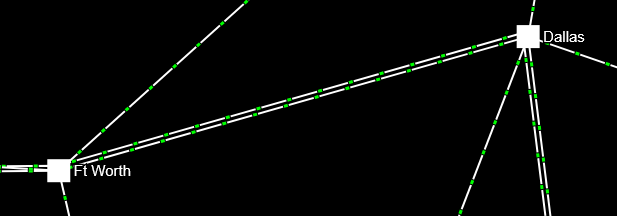
Click on one of the lines to bring up more information.
Some of the lines have two circuits.
As the electric grid operator, you
can switch lines in and out of service.
If a line is overloaded, it will turn yellow. If it
becomes very overloaded, it will turn orange. If a
line remains orange, it is at risk of tripping due
to overload. Tripped lines (red dash)
cannot be reclosed.
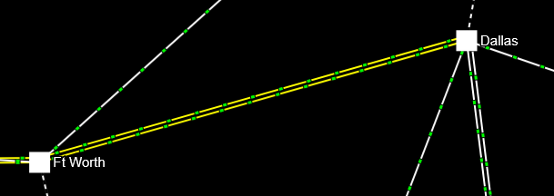
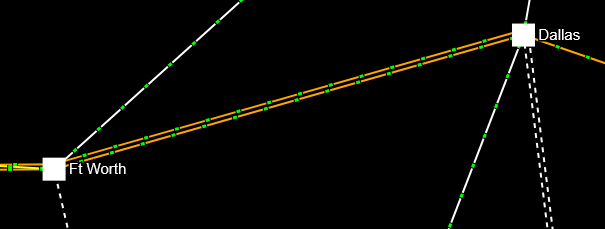
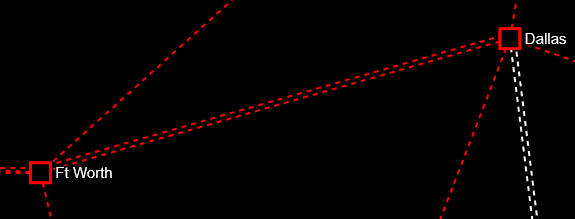
Keep in mind that when a line is removed from service
or tripped, the power previously flowing on it will
have to find a new path through other lines. If
those other lines become overloaded, this can cause
cascading outages.
If there are no other paths, the grid has been
separated into parts. This will cause a lot of
lines, loads, and and generators to trip
(major cascade).
The dashboard is shown on the left (hover for more
information). It shows overview grid data.
The clock will run at 1 minute every 1/2 second
by default. Use the controls in the top right to
pause or fast forward the clock. When it gets to
11pm, the shift is over!
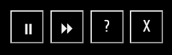
Below the clock is the grid frequency. This is the
most important number for avoiding a blackout!
Keep it as close to 60 Hz as possible. If it turns
orange, you are getting close to risk of tripping.
If it turns red, you will start to see generators,
loads, and lines trip offline and a blackout is
likely not far off.
How do you control the grid frequency? If the
frequency is too high (above 60.3 Hz), there is
too much generation and not enough load. Shut down
some generators or add back some outaged load.
If the frequency is too low (below 59.7 Hz),
you need more generation quickly or you need to
shed load! Keep in mind starting up a generator
takes some time.

Reserves are shown on the center left of the
dashboard. The reserves is how much extra power
you could generate if all your in-service generators
were increased to their maximum output. In other
words, it measures your backup. If reserves get to
zero, you should see frequency decrease soon and
that is likely to lead to blackout. Start up more
generators to increase your reserve.